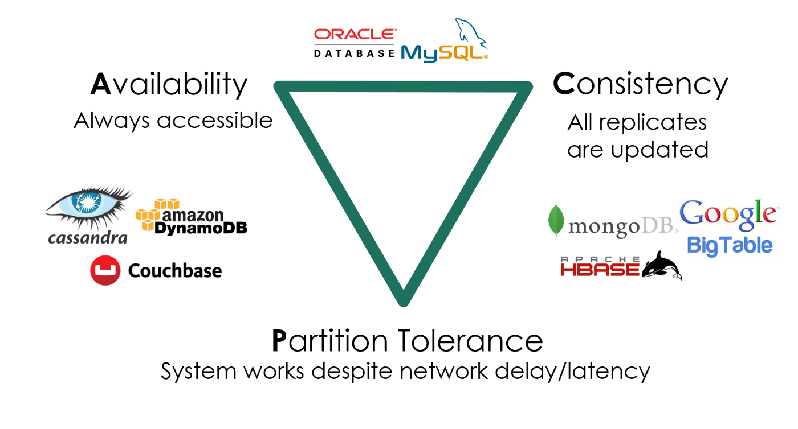
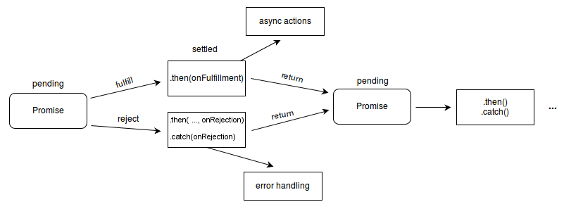

真实世界的并发编程
Overview
复习
- 并发编程的基本工具：线程库、互斥和同步
本次课回答的问题
- Q: 什么样的任务是需要并行/并发的？它们应该如何实现？
本次课主要内容
- 高性能计算中的并发编程
- 数据中心里的并发编程
- 我们身边的并发编程
收获
1、什么样的任务是需要并行/并发的？它们应该如何实现？
讲了三种真正的并发程序是怎么写的，高性能计算注重的是任务的分解，本质上还是生产者和消费者；数据中心，注重的存储，意味着系统调用，通过协程线程解决；写人机交互的前端，注重的是代码的维护性。
都可以用线程来实现
- 并发编程的真实应用场景
- 高性能计算 (注重任务分解): 生产者-消费者 (MPI/OpenMP)
- 数据中心 (注重系统调用): 线程-协程 (Goroutine)
- 人机交互 (注重易用性): 事件-流图 (Promise)
- 编程工具的发展突飞猛进
- 自 Web 2.0 以来，开源社区改变了计算机科学的学习方式
2、线程、协程、Goroutine
一个线程是c语言编译成汇编的状态机，然后状态机每走一部需要执行一条指令
从一个状态机切换到另一个状态机，那么就需要保存所有的寄存器，x86的话 abcd sidi pbst r8 r9 十六的寄存器，还有系统寄存器 pc，就很大的开销了；然后还要到内核里兜一圈，然后选择下个要执行的线程，把这个线程里的信息恢复到寄存器里，还要涉及地址空间的变化
因此，线程切换的开销很大
协程，很少的切换，但是会造成线程的阻塞
在数据中心里面，创建一个线程，许多协程的话，面临的问题：如果有一个协程 block 了（等磁盘或者等网络，向另一个服务器情况，可能100ms 才能回来），其他协程的cpu就被浪费掉了
Go: 小孩子才做选择，多处理器并行和轻量级并发我全都要！
Goroutine: 概念上是线程，实际是线程和协程的混合体
- 每个 CPU 上有一个 Go Worker，自由调度 goroutines
- 执行到 blocking API 时 (例如 sleep, read)
- Go Worker 偷偷改成 non-blocking 的版本
- 成功 → 立即继续执行
- 失败 → 立即 yield 到另一个需要 CPU 的 goroutine
- 太巧妙了！CPU 和操作系统全部用到 100%
- Go Worker 偷偷改成 non-blocking 的版本
每个CPU上都绑定一个线程，每个线程又有多个协程，有个很巧妙的设计（上课笔记）：
- 如果一个协程 read() 的时候，线程会阻塞的嘛，
- 然后他就把阻塞的 read() 系统调用替换成不阻塞的系统调用（scanf printf 都是阻塞的，linux 中都有相对应不阻塞的）
- 其实就是 read() 替换成 read_non_block()
- 如果这个 read_non_block() 没有返回的话，会立即切换到线程下的另一个协程执行
- 直到有一天数据回来了，read_non_block的协程会被标记为可执行的
相当于，当协程想做一件耗时的事情的时候，告诉操作系统，我要做这件事了，你等等，然后马上切换到另一个协程运行
一、高性能计算中的并发编程
1、高性能计算程序：特点
“A technology that harnesses the power of supercomputers or computer clusters to solve complex problems requiring massive computation.” (IBM)
以计算为中心
- 系统模拟：天气预报、能源、分子生物学
- 人工智能：神经网络训练
- 矿厂：纯粹的 hash 计算
- HPC-China 100
2、高性能计算：主要挑战
计算任务如何分解
- 计算图需要容易并行化
- 机器-线程两级任务分解
- 生产者-消费者解决一切
- Parallel and Distributed Computation: Numerical Methods
真正想学高性能计算的话，看完上面👆这本书就可以了
- 告诉了我们怎么去求线性方程组，线性规划这类重要的数学问题
- 模拟宏观世界就是有限元，模拟微观世界就是量子
- 在超级计算机里解决这些问题的方法就这些
线程间如何通信
- 通信不仅发生在节点/线程之间，还发生在任何共享内存访问
- 还记得被 mem-ordering.c 支配的恐惧吗？
高性能计算主要靠「并行化」，能够并行化的前提是这个总任务可以「分解」，子任务各自独立的跑在线程中，不过子任务可能也要进行一些交互，会涉及线程间通信
3、例子：Mandelbrot Set

- mandelbrot.c (embarrassingly parallel)
#include "thread.h"
#include <math.h>
int NT;
#define W 6400
#define H 6400
#define IMG_FILE "mandelbrot.ppm"
static inline int belongs(int x, int y, int t) {
return x / (W / NT) == t;
}
int x[W][H];
int volatile done = 0;
// 生成图片的算法 ppm
void display(FILE *fp, int step) {
static int rnd = 1;
int w = W / step, h = H / step;
// STFW: Portable Pixel Map
fprintf(fp, "P6\n%d %d 255\n", w, h);
for (int j = 0; j < H; j += step) {
for (int i = 0; i < W; i += step) {
int n = x[i][j];
int r = 255 * pow((n - 80) / 800.0, 3);
int g = 255 * pow((n - 80) / 800.0, 0.7);
int b = 255 * pow((n - 80) / 800.0, 0.5);
fputc(r, fp); fputc(g, fp); fputc(b, fp);
}
}
}
void Tworker(int tid) {
for (int i = 0; i < W; i++)
for (int j = 0; j < H; j++)
if (belongs(i, j, tid - 1)) {
double a = 0, b = 0, c, d;
while ((c = a * a) + (d = b * b) < 4 && x[i][j]++ < 880) {
b = 2 * a * b + j * 1024.0 / H * 8e-9 - 0.645411;
a = c - d + i * 1024.0 / W * 8e-9 + 0.356888;
}
}
done++;
}
void Tdisplay() {
float ms = 0;
while (1) {
// FILE *fp = popen("viu -", "w"); assert(fp); // 没装viu的话可以注掉
// display(fp, W / 256);
// pclose(fp);
if (done == NT) break;
usleep(1000000 / 5);
ms += 1000.0 / 5;
}
printf("Approximate render time: %.1lfs\n", ms / 1000);
FILE *fp = fopen(IMG_FILE, "w"); assert(fp);
display(fp, 2);
fclose(fp);
}
int main(int argc, char *argv[]) {
assert(argc == 2);
NT = atoi(argv[1]);
for (int i = 0; i < NT; i++) {
create(Tworker);
}
create(Tdisplay);
join();
return 0;
}
$ gcc mandelbrot.c -lpthread -lm -O2
# 得安装 viu，不装的话注释掉那三行
$ ./a.out 4
Approximate render time: 8.2s
# 可以转格式打开，也可以直接打开ppm
$ convert mandelbrot.ppm a.jpg
$ open mandelbrot.ppm
二、数据中心里的并发编程
1、数据中心程序：特点
“A network of compu ting and storage resources that enable the delivery of shared applications and data.” (CISCO)
以数据 (存储) 为中心
- 从互联网搜索 (Google)、社交网络 (Facebook/Twitter) 起家
- 支撑各类互联网应用：微信/QQ/支付宝/游戏/网盘/……
算法/系统对 HPC 和数据中心的意义
- 你有 1,000,000 台服务器
- 如果一个算法/实现能快 1%，就能省 10,000 台服务器
- 参考：对面一套房 ≈ 50 台服务器 (不计运维成本)
2、数据中心：主要挑战
多副本情况下的高可靠、低延迟数据访问
- 在服务海量地理分布请求的前提下
- 数据要保持一致 (Consistency)
- 服务时刻保持可用 (Availability)
- 容忍机器离线 (Partition tolerance)

3、这门课的问题：如何用好一台计算机？
如何用一台 (可靠的) 计算机尽可能多地服务并行的请求
- 关键指标：QPS, tail latency, ...
我们有的工具
- 线程 (threads)
线程切换是有代价的，切换的时候做了什么
一个线程是c语言编译成汇编的状态机，然后状态机每走一部需要执行一条指令
从一个状态机切换到另一个状态机，那么就需要保存所有的寄存器，x86的话 abcd sidi pbst r8 r9 十六的寄存器，还有系统寄存器 pc，就很大的开销了；然后还要到内核里兜一圈，然后选择下个要执行的线程，把这个线程里的信息恢复到寄存器里，还要涉及地址空间的变化
【00:53:00】讲协程，得做实验，在 c 代码中实现协程，代价比线程切换小的多
- 协程 (coroutines)
- 多个可以保存/恢复的执行流 (M2 - libco)
- 比线程更轻量 (完全没有系统调用，也就没有操作系统状态)
co_yield() 会被翻译成 call co_yield 指令，在函数调用的时候，不是所有的东西都一定要保存
听老师讲：1、不用进入操作系统内核兜一圈；2、保存的寄存器少的多
4、数据中心：协程和线程
数据中心
- 同一时间有数千/数万个请求到达服务器
- 计算部分
- 需要利用好多处理器
- 线程 → 这就是我擅长的 (Mandelbrot Set)
- 协程 → 一人出力，他人摸鱼
- I/O 部分
- 会在系统调用上 block (例如请求另一个服务或读磁盘)
- 协程 → 一人干等，他人围观。如果协程遇到 read()，线程整个阻塞了，又变成线程了
- 线程 → 每个线程都占用可观的操作系统资源
- (这个问题比你想象的复杂，例如虚拟机)
在数据中心里面，创建一个线程，许多协程的话，面临的问题：如果有一个协程 block 了（等磁盘或者等网络，向另一个服务器情况，可能100ms 才能回来），其他协程的cpu就被浪费掉了
5、Go 和 Goroutine
Go: 小孩子才做选择，多处理器并行和轻量级并发我全都要！
Goroutine: 概念上是线程，实际是线程和协程的混合体
- 每个 CPU 上有一个 Go Worker，自由调度 goroutines
- 执行到 blocking API 时 (例如 sleep, read)
- Go Worker 偷偷改成 non-blocking 的版本
- 成功 → 立即继续执行
- 失败 → 立即 yield 到另一个需要 CPU 的 goroutine
- 太巧妙了！CPU 和操作系统全部用到 100%
每个CPU上都绑定一个线程，每个线程又有多个协程，有个很巧妙的设计（上课笔记）：
- 如果一个协程 read() 的时候，线程会阻塞的嘛，
- 然后他就把阻塞的 read() 系统调用替换成不阻塞的系统调用（scanf printf 都是阻塞的，linux 中都有相对应不阻塞的）
- 其实就是 read() 替换成 read_non_block()
- 如果这个 read_non_block() 没有返回的话，会立即切换到线程下的另一个协程执行
- 直到有一天数据回来了，read_non_block的协程会被标记为可执行的
相当于，当协程想做一件耗时的事情的时候，告诉操作系统，我要做这件事了，你等等，然后马上切换到另一个协程运行
例子
// Example from "The Go Programming Language"
package main
import (
"fmt"
"time"
)
func main() {
go spinner(100 * time.Millisecond)
const n = 45
fibN := fib(n) // slow
fmt.Printf("\rFibonacci(%d) = %d\n", n, fibN)
}
func spinner(delay time.Duration) {
for {
for _, r := range `-\|/` {
fmt.Printf("\r%c", r)
time.Sleep(delay)
}
}
}
func fib(x int) int {
if x < 2 { return x }
return fib(x - 1) + fib(x - 2)
}
6、现代编程语言上的系统编程
Do not communicate by sharing memory; instead, share memory by communicating. ——Effective Go
共享内存 = 万恶之源，太灵活了（任何人都可以改共享），不要用共享内存做进程间通信，go里面也有共享内存的
- 在奇怪调度下发生的各种并发 bugs
- 条件变量：broadcast 性能低，不 broadcast 容易错
- 信号量：在管理多种资源时就没那么好用了
既然生产者-消费者能解决绝大部分问题，提供一个 API 不就好了？
- producer-consumer.go
- 缓存为 0 的 channel 可以用来同步 (先到者等待)
package main
import "fmt"
var stream = make(chan int, 10)
const n = 4
func produce() {
for i := 0; ; i++ {
fmt.Println("produce", i)
stream <- i
}
}
func consume() {
for {
x := <- stream
fmt.Println("consume", x)
}
}
func main() {
for i := 0; i < n; i++ {
go produce()
}
consume()
}
三、我们身边的并发编程
1、Web 2.0 时代 (1999)
人与人之间联系更加紧密的互联网
- “Users were encouraged to provide content, rather than just viewing it.”
- 你甚至可以找到一些 “Web 3.0”/Metaverse 的线索
是什么成就了今天的 Web 2.0?
- 浏览器中的并发编程：Ajax (Asynchronous JavaScript + XML)
- HTML (DOM Tree) + CSS 代表了你能看见的一切
- 通过 JavaScript 可以改变它
- 通过 JavaScript 可以建立连接本地和服务器
- 你就拥有了全世界！
2、人机交互程序：特点和主要挑战
特点：不太复杂
- 既没有太多计算
- DOM Tree 也不至于太大 (大了人也看不过来)
- DOM Tree 怎么画浏览器全帮我们搞定了
- 也没有太多 I/O
- 就是一些网络请求
挑战：程序员多
- 零基础的人你让他整共享内存上的多线程
- 恐怕我们现在用的到处都是 bug 吧？？？
3、单线程 + 事件模型
尽可能少但又足够的并发
- 一个线程、全局的事件队列、按序执行 (run-to-complete)
- 耗时的 API (Timer, Ajax, ...) 调用会立即返回
- 条件满足时向队列里增加一个事件
$.ajax( { url: 'https://xxx.yyy.zzz/login',
success: function(resp) {
$.ajax( { url: 'https://xxx.yyy.zzz/cart',
success: function(resp) {
// do something
},
error: function(req, status, err) { ... }
}
},
error: function(req, status, err) { ... }
);
4、异步事件模型
好处
- 并发模型简单了很多
- 函数的执行是原子的 (不能并行，减少了并发 bug 的可能性)
- API 依然可以并行
- 适合网页这种 “大部分时间花在渲染和网络请求” 的场景
- JavaScript 代码只负责 “描述” DOM Tree
坏处
- Callback hell (祖传屎山)
- 刚才的代码嵌套 5 层，可维护性已经接近于零了
5、异步编程：Promise
导致 callback hell 的本质：人类脑袋里想的是 “流程图”，看到的是 “回调”。
The Promise object represents the eventual completion (or failure) of an asynchronous operation and its resulting value.

Promise: 流程图的构造方法 (Mozilla-MDN Docs)
6、Promise: 描述 Workflow 的 “嵌入式语言”
Chaining
loadScript("/article/promise-chaining/one.js")
.then( script => loadScript("/article/promise-chaining/two.js") )
.then( script => loadScript("/article/promise-chaining/three.js") )
.then( script => {
// scripts are loaded, we can use functions declared there
})
.catch(err => { ... } );
Fork-join
a = new Promise( (resolve, reject) => { resolve('A') } )
b = new Promise( (resolve, reject) => { resolve('B') } )
c = new Promise( (resolve, reject) => { resolve('C') } )
Promise.all([a, b, c]).then( res => { console.log(res) } )
7、Async-Await: Even Better
async function
- 总是返回一个
Promiseobject async_func()- fork
await promise
await promise- join
A = async () => await $.ajax('/hello/a')
B = async () => await $.ajax('/hello/b')
C = async () => await $.ajax('/hello/c')
hello = async () => await Promise.all([A(), B(), C()])
hello()
.then(window.alert)
.catch(res => { console.log('fetch failed!') } )
总结
本次课回答的问题
- Q: 什么样的任务是需要并行/并发的？它们应该如何实现？
讲了三种真正的并发程序是怎么写的，高性能计算注重的是任务的分解，本质上还是生产者和消费者；数据中心，注重的存储，意味着系统调用，通过协程线程解决；写人机交互的前端，注重的是代码的维护性。
都可以用线程来实现
Take-away message
- 并发编程的真实应用场景
- 高性能计算 (注重任务分解): 生产者-消费者 (MPI/OpenMP)
- 数据中心 (注重系统调用): 线程-协程 (Goroutine)
- 人机交互 (注重易用性): 事件-流图 (Promise)
- 编程工具的发展突飞猛进
- 自 Web 2.0 以来，开源社区改变了计算机科学的学习方式
- 希望每个同学都有一个 “主力现代编程语言”
- Modern C++, Rust, Javascript, ...